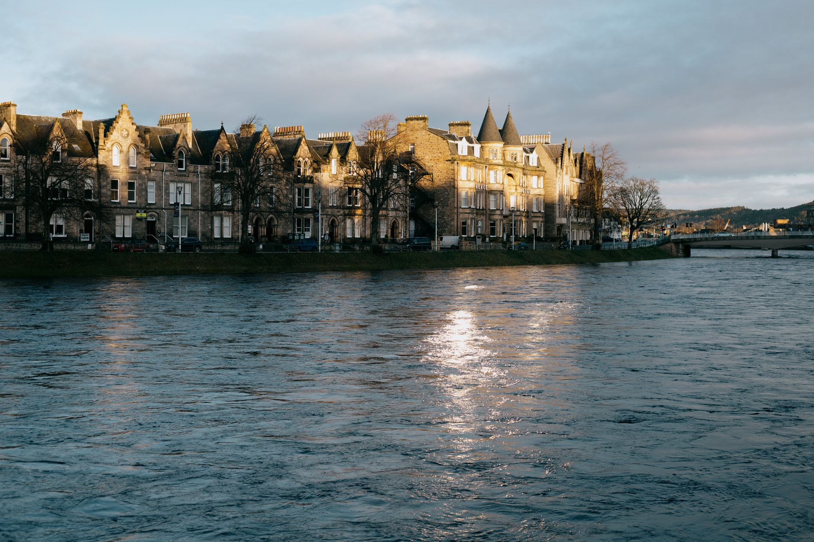
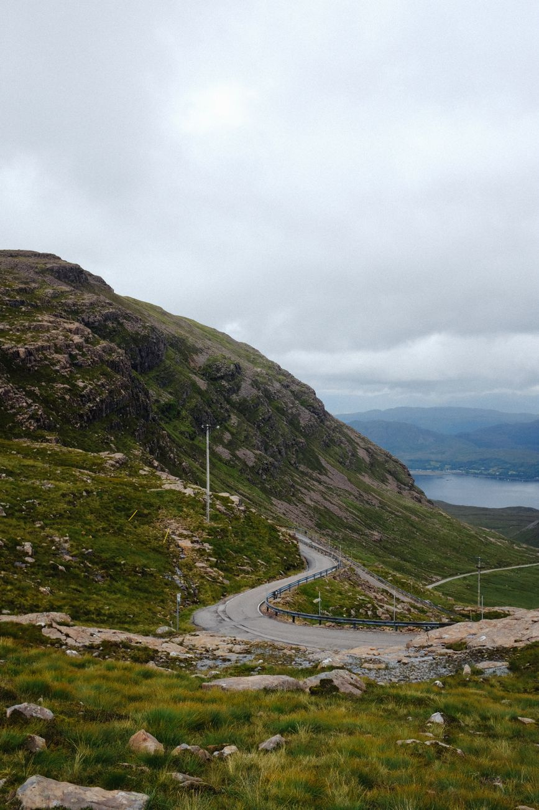
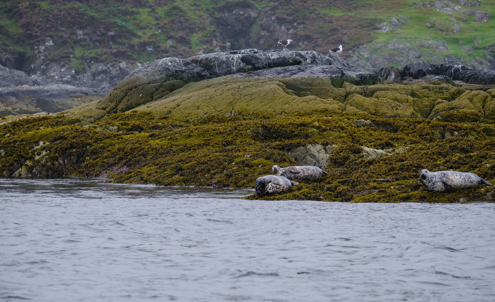
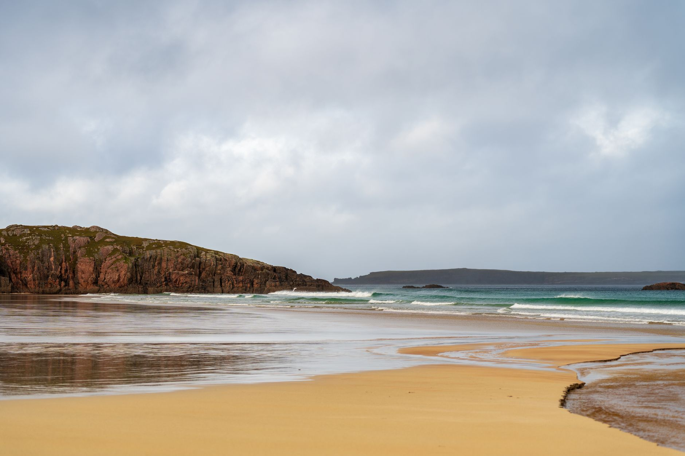
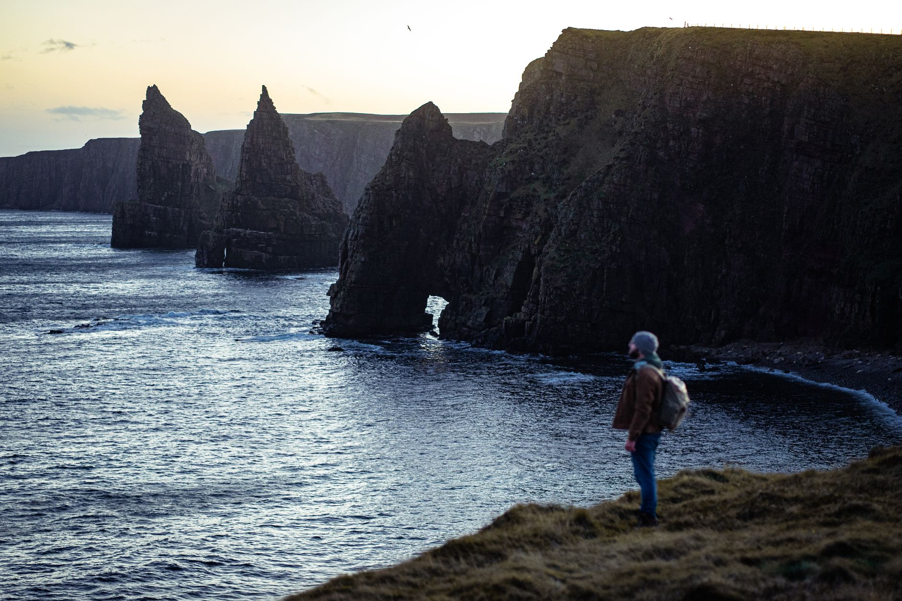

Photo: Tejas kamble / Pexels
The NC500 is a 516-mile signed loop around the north of Scotland, but the route most people actually drive is a shorter line between five real places: Inverness, Applecross, Ullapool, Durness and John o'Groats. Everything else on the official route is a choice of which back road connects them.
A car isn't optional here. Public transport barely reaches the west coast towns on this list, and the whole point of the route is stopping wherever the view demands it, not where a bus happens to.
-

InvernessThe loop starts and ends here, on the River Ness. -

ApplecrossReached via Bealach na Ba, one of the highest paved roads in Britain: a single-track climb to 626 metres with hairpin turns most of the way up. -

UllapoolA working fishing port, and where the CalMac ferry leaves for Stornoway and the Outer Hebrides. -

DurnessThe most north-westerly village on the British mainland. Smoo Cave, one of the largest sea cave entrances in Britain, is a short walk away. -

John o'GroatsThe traditional end of the Land's End to John o'Groats route, and mainland Britain's north-eastern tip.
Stop photos: Sinitta Leunen, Adrien Olichon, Petra Vajdova, Michał Robak, Clément Proust / Pexels
Most of this route rewards a slow pace over a fast one. The Applecross pass alone is worth an unhurried afternoon, not a drive-through.
Good to know before you drive it
- Long stretches of this route, including the road into Applecross, are single-track: one lane shared by both directions, with passing places to let oncoming traffic through. The UK Highway Code (Rule 155) sets the etiquette: if a passing place is on your left, pull into it and wait; if it's on your right, stop opposite it and let the oncoming car pull in instead.
- The national speed limit on single carriageway roads is 60mph, but that's a ceiling, not a target. On a genuine single-track lane with blind bends, 20 to 30mph is normal, and locals rarely go faster.
- Fuel stations thin out fast on the west and north coast. Between the bigger towns you can go 30 to 40 miles without one, so the same rule as anywhere remote applies: fill up when you can, not when you're low.
- 725 km sounds shorter than the advertised 516-mile (830 km) full NC500 loop, because this route takes the direct road between the five stops rather than tracing every coastal detour. Add the detours back in if you have the days for them.
Ready to book this drive? This route runs 725 km and about 11.9 hours behind the wheel, well inside Auto Europe's UK coverage.
We book through Auto Europe. It compares Hertz, Sixt and the other major agencies in one search, with cross-border and one-way terms visible before checkout instead of buried in each company's own fine print.
Compare car rental prices →This is an affiliate link. Booking through it may earn Travel Gap a commission at no extra cost to you.
Read the full Europe road trip planning guide for what to check before you book anywhere on the continent.